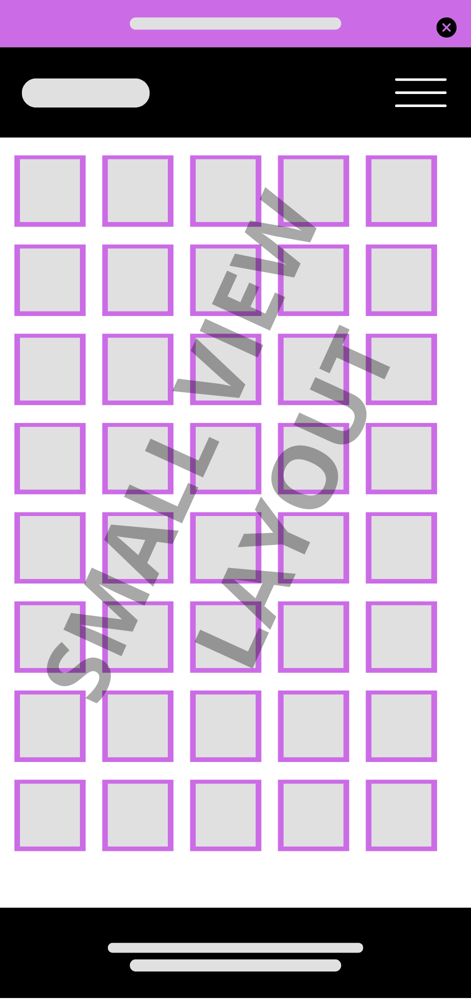
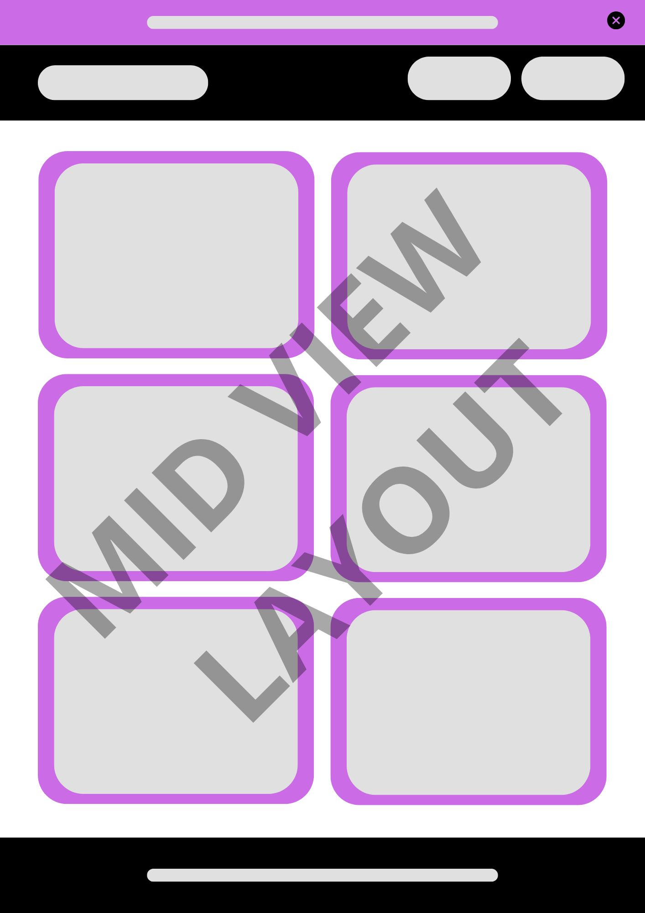
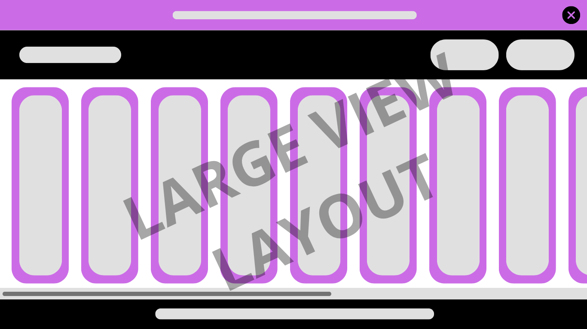

-This name represents an opportunity for creating a cros-over between Marvel and DC to assemble your dream team
-Domain Availability: secret-dwars.org
-Purpose: This site provides with an opportunity to look through characters from marvel and dc comics and add them to your personalized Team. It also provides with an opportunity to apply for comics discounts from both franchises.
-Scenarios:
a. Where can I look at the comics list that apply to this discount?
b. How do I know Im building a good team?
-Color Scheme:
a. #C84B31 will be used in the div on top of the nav bar and website title
b. #191919 will be used for the nav bar
c. #2D4059 will be used for the background of each superhero card
d. #4D3052 will be used for the border of the superhero card and the add button in each superhero card
-Fonts:
a. Silkscreen is used for the nav bar
b. Share Tech Mono is used for the rest of the fonts in the website
Small View Layout

Mid View Layout

Large View Layout
